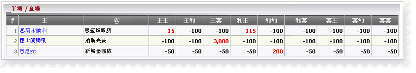

半場/ 全場
定義:
查看代理人'贏/輸數字根據半場，全場賽果。

半場/ 全場
- H: 主 A: 客 D: 和
- 主客意思:
- 1 墨爾本勝利 -vs- 惠靈頓鳳凰
- 最後賽: 主主 --> 代理將輸 15
- 最後賽過:和主 --> 代理將輸 115
- 最後賽果：其他 --> 代理將贏 100
- 2 Queensland Roar -vs- 珀斯光榮
- 最後賽: 主客 --> 代理將輸 3000
- 最後賽果：其他 --> 代理將贏 100
- 3 悉尼FC -vs- 新城堡聯隊
- 最後賽: 和和 --> 代理將輸 200
- 最後賽果：其他 --> 代理將贏 100